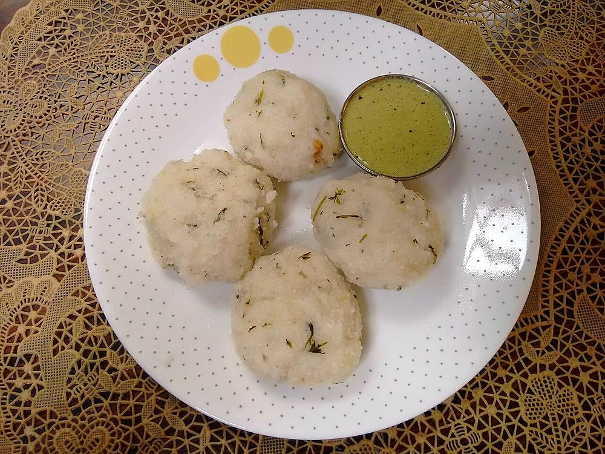

Pundi Gatti
steamed tulu rice dumplings speckled with coconut and mustard, eaten with curry or chutney

Start the day before. The soaking alone is 4 hr, against 50 min of actual work.
Contains: mustard
Ingredients
Quantities for 4.
- 1 1/2 cups, short-grain raw, soaked 4 hours Ricethe coarse grind is what gives pundi its bite. Do not use rice flour
- 1/2 cup, freshly grated Coconut
- 1 tbsp Urad Dal
- 1 tsp Mustard Seeds
- 2, finely chopped Green Chilli
- 1 sprig, chopped Curry Leaves
- 1 1/2 tbsp Coconut Oil
- 1 1/2 cups Water
- 1 tsp Salt
Cookware
stovetop, steamer, blender
Checked against the ingredient list for ten allergens: milk, egg, fish, crustaceans, tree nuts, peanuts, sesame, mustard, soy and gluten. Brands vary, so read the label on anything new to you.
Before you start
- Soak the rice at least 4 hours, or overnight. It must grind coarse but soft, like wet semolina.
- Set the steamer water boiling before you shape the dumplings so they go in hot and do not sit and dry out.
- Keep a small bowl of water beside you for wetting your palms while rolling.
Method
- Drain the soaked rice well and grind it coarse with 1/2 cup water. Aim for the texture of wet rava, not a smooth batter.Stop while you can still feel grains between your fingers. Ground smooth, the dumplings turn gluey.
- Heat 1 tbsp coconut oil in a heavy pan, pop the mustard seeds and fry the urad dal until it turns light gold, about 1 minute.
- Add the green chilli and curry leaves and let them crackle for 20 seconds.
- Pour in 1 cup water with the salt and bring it to a rolling boil.
- Tip in the ground rice and the grated coconut all at once and stir hard over low heat.
- Keep stirring for 6 to 8 minutes until the mixture pulls away from the sides in one lump and no longer sticks to the spoon.If it still smears the pan, it needs another 2 minutes. A wet dough gives dumplings that collapse in the steamer.
- Cover the pan and let the dough cool for 10 minutes, until it is warm enough to handle but not cold.Roll while it is still warm. Cold pundi dough cracks and will not hold a ball.
- With wet palms roll the dough into 12 smooth balls the size of a lime, pressing out any cracks.
- Steam them in a single layer for 12 to 15 minutes, until they are glossy and a skewer comes out clean.
- Rest 5 minutes off the heat before lifting them out, and serve hot with chicken curry, chana gashi or coconut chutney.Lifting them straight from the steamer tears the skin; the 5 minute rest firms them up.
Storage
Keeps 2 days refrigerated in a covered box. Re-steam for 5 minutes to bring them back soft. Reheated in a microwave they turn rubbery.
Nutrition Good estimate
Low protein: 6 g a serving, 7% of the calories
| Per serving186 g | Per 100 g | |
|---|---|---|
| Calories | 358 kcal | 193 kcal |
| Protein | 6.0 g | 3 g |
| Carbohydrate | 61.8 g | 33 g |
| of which sugars | 0.9 g | 0 g |
| Fibre | 1.5 g | 1 g |
| Fat | 9.1 g | 5 g |
| of which saturated | 7.3 g | 4 g |
| of which unsaturated | 1.0 g | 1 g |
Nearest database match used for curry leaves, urad dal. Estimated from raw ingredients using USDA FoodData Central.
More like this: Vegan Indian recipes · Vegetarian Indian recipes · Gluten-free Indian recipes · Dairy-free Indian recipes · No onion no garlic recipes · Karnataka recipes
Times, yields, allergens and nutrition are guidance. Use your own judgement on doneness and on storing. More in About.